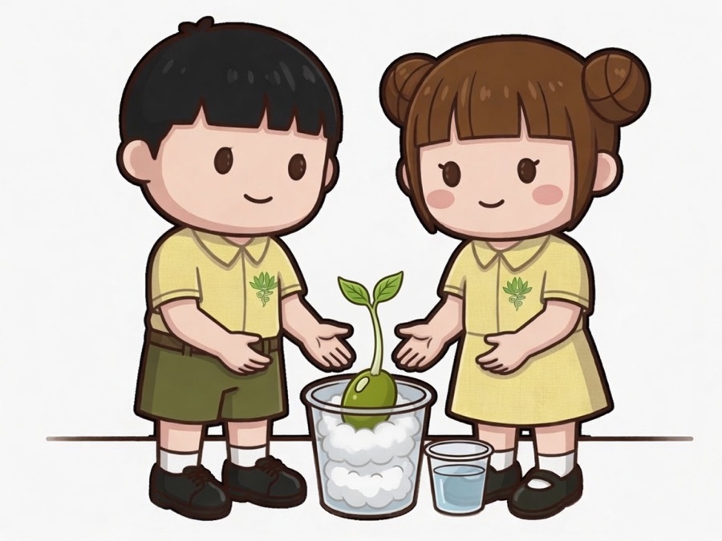

請選擇要記錄的日子。同一日可以再次拍照並儲存。
第 1 日
尚未拍照
請對準綠豆盆栽
請對準綠豆盆栽
電話及平板電腦會開啟相機。電腦會先開啟鏡頭，對準後再按「拍攝」。
生長情況
語音紀錄
按下後，請說出綠豆的生長情況，系統會轉換為書面語。
儲存後會交給老師。同一日再次儲存，會取代舊紀錄。若相片不正確，可按「刪除本日相片」後重新拍照。
已紀錄的日子
本班同學的盆栽
請欣賞綠豆的生長。
二年級科學 第三課 動手種植物
開始前請填寫班別及學號，無須填寫姓名。
